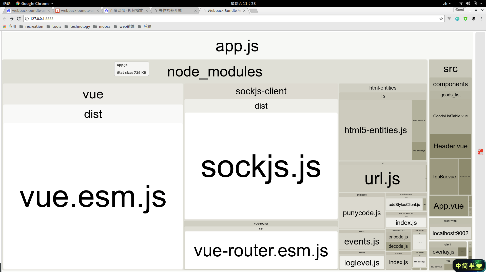
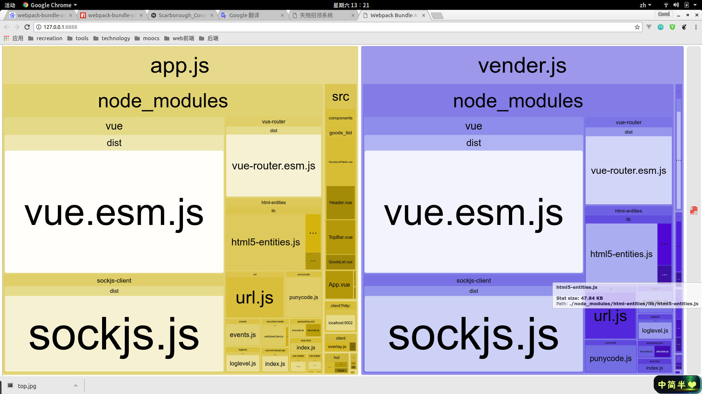
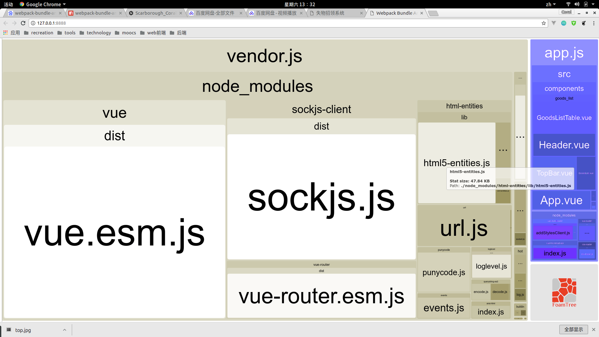
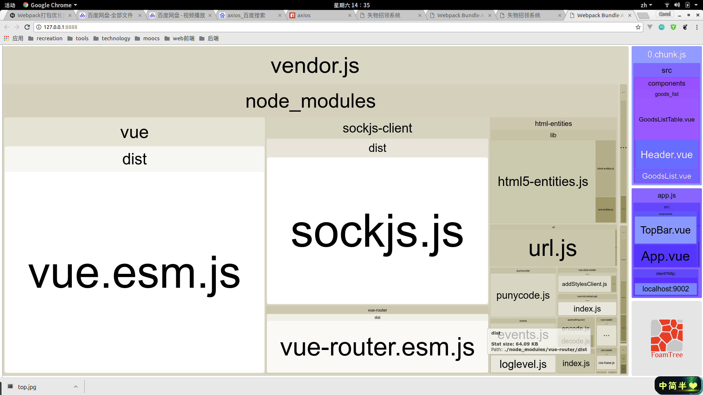
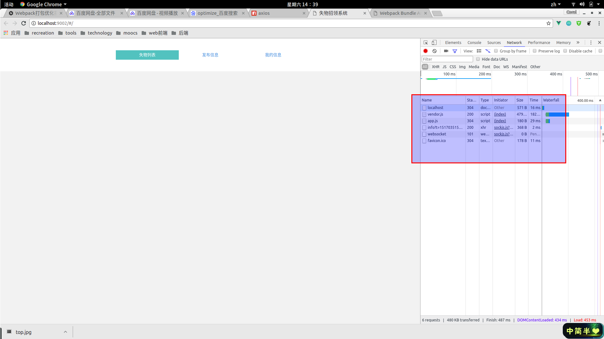
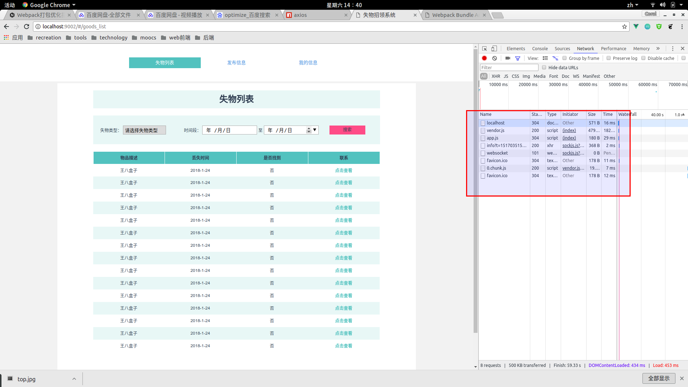
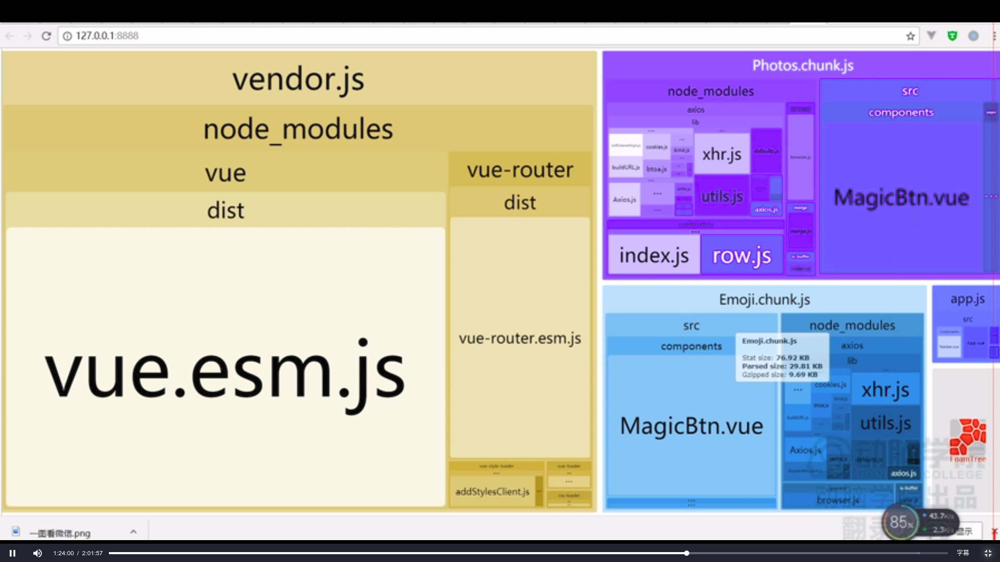
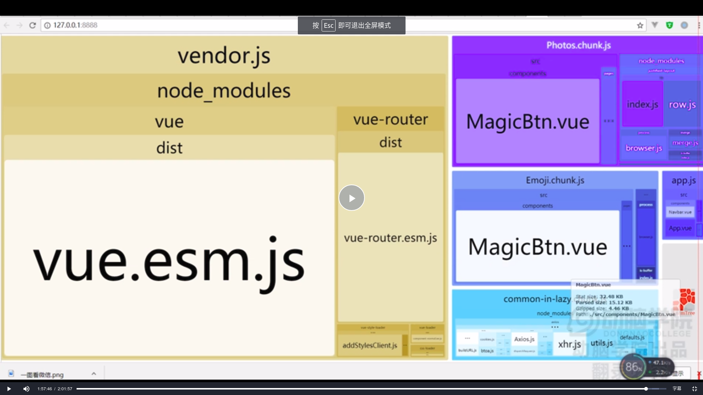

Webpack打包优化指南
Stay hungry. Stay foolish.
前言
web前端打包工具对于高效开发来说已是必不可少，但高效开发并不能保证用户体验好，我们经常为了减少http请求而将所有代码打包到一个js文件中，但这明显不科学。因为随着项目的扩展，js文件会越来越大，这会导致许多问题。这就需要我们来优化组织打包文件，对于webpack来说这也是很有必要的。
工具介绍
今天意外地发现了一个神奇的工具，是一个将webpack打包后的文件关系可视化的工具，叫webpack-bundle-analyzer，这里是npm的工具链接,其效果如下。

优化第一步——第三方依赖分离
上图中很明显的看到只打包了一个js文件，app.js。它包含了第三方依赖代码和业务代码。每次http请求都会请求这个文件，而这个文件中常常有一些不变化的第三方依赖包。因为第三方依赖不想业务代码那样多变，所以我们就想能不能将业务代码和第三方依赖代码分离打包?然后第三方依赖缓存到客户端，这样就不必多次请求了。Bingo！我们只需要配置另一个入口文件，将第三方依赖配置上就OK了。
1 | module.exports = { |
然后打包后的结果是这样的。

但是为毛打包的第三方依赖会重复？这不就相当于什么也没干而且还增加了负担？我们希望只有一份vue和vue-router然后让这两部分引用就行了。解决办法如下：
1 | // 在webpack配置中添加优化公共块插件 |
这样就将公共的块抽取出来放到vendor中，结果如下：

这样第三方依赖就提取出来了，然后右边的业务代码单独分到一个打包文件中。
优化第二步——自动提取
我们会遇到这种情况，尽管已经使用了vue、vue-router这些依赖，但随着项目的增大，需求的扩展，我们需要另外一些第三方依赖，但每次都需要想入口文件中添加依赖。
1 | module.exports = { |
有成千上万个第三方依赖，你难道需要一个个手打上去，这显然是傻。我们有没有什么方法让webpack大佬自动提取这些第三方依赖到打包文件中？方法是有的，我们需要配置一个脚本，代码如下：
1 | module.exports = { |
这段代码即判断打包模块是否是第三方依赖的js，若是则放到vendor里。效果同上：
优化第三步——业务代码打包优化
可能你认为打包后的文件中第三方依赖大小比重占得多，所以业务代码打包不必优化。但这是错的，事实上恰恰相反，业务代码比重一般是最大的，所以需要对其进行分离组织优化。将一些模块懒加载，一些必要的首先加载,公共的代码需要提取。
如何懒加载
首先先谈一下为什么要懒加载。比如你有许多模块，首先展示的是主页，然后同路由下有其他模块，这些模块的脚本就需要懒加载，让主页代码优先加载。那么如何懒加载呢？这一点我也很好奇，使用了以下代码。
1 | const LazyModule = ()=> import("The Module"); |
打包结果如下：

就将需要懒加载的模块单独打包了，0.chunk.js
懒加载前后页面资源变化
- 主页
 - 其他路由页

重复依赖提取

有时候我们会发现不同的页面用了相同第三方依赖，比如说axios（类似jQuery中的Ajax），我们需要将这些公共的依赖提取出来，这就需要再一次请教webpack大佬了。
1 | // 注意，这里的name必须和上面入口文件相同，以便提取 |
这样，公共的依赖代码就提取出来了，效果如下：

再一次感受到了webpack的强大之处，然后这个webpack-bundle-analyzer这个工具的有趣与强大。